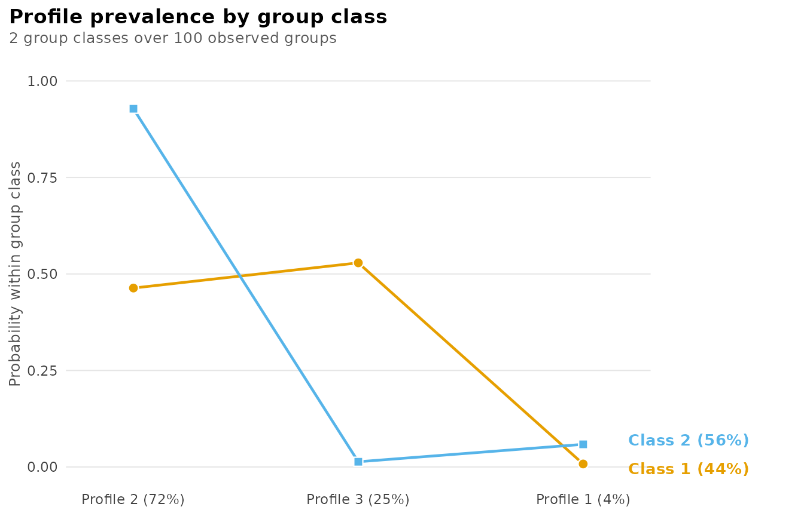

Multilevel latent class analysis with the latents R package
Mohammed Saqr
University of Eastern FinlandSonsoles López-Pernas
University of Eastern FinlandSource:
vignettes/lca.Rmd
lca.RmdLatent class analysis (LCA) is the categorical-data counterpart of latent profile analysis, extending the person-centred approach to situations in which the observed indicators are categorical rather than continuous. Whereas latent profile analysis identifies subgroups based on differences in the means of continuous indicators, LCA identifies latent subgroups based on differences in the probabilities of endorsing or selecting particular response categories across a set of categorical items. Each latent class is therefore characterized by a specific configuration of item-response probabilities, representing the likelihood of observing each response category conditional on membership in that class (Collins & Lanza, 2010). The resulting classes can be interpreted as distinct response patterns that capture unobserved heterogeneity in the population.
Two-level latent class analysis extends this framework to hierarchical data structures in which individual observations are nested within higher-level units, such as students within classrooms, employees within organizations, or patients within healthcare institutions (Vermunt, 2003). In conventional LCA, individuals are assumed to originate from a single population characterized by a common set of class proportions. However, when observations are clustered, the distribution of individual-level latent classes may differ across groups. Two-level LCA accounts for this possibility by introducing a second latent classification at the group level. The model consequently distinguishes between individual-level classes, which describe differences in response patterns, and group-level classes, which capture differences in the composition of those individual-level classes across groups.
For observation belonging to group , let denote the individual-level latent class and the latent group class. The model estimates three sets of parameters that jointly describe the individual and group classifications.
First, the item-response probabilities, defined as , describe the probability of observing response category on item , conditional on an individual’s membership in class . These probabilities determine the substantive characteristics of each individual-level class by describing its characteristic response pattern. An important assumption of the two-level specification is that these item-response probabilities remain invariant across group classes. Thus, an individual belonging to a particular latent class is assumed to exhibit the same conditional response probabilities regardless of the group to which they belong.
Second, the individual-level class probabilities, expressed as , represent the probability that an individual belongs to class , conditional on the membership of their group in group class . These probabilities describe the composition of each group class in terms of its constituent individual-level classes. For example, different group classes may be characterized by different proportions of individuals exhibiting particular response patterns, even though the underlying item-response probabilities defining those individual-level classes remain unchanged. The probabilities sum to one across the individual-level classes within each group class.
Third, the group-level class probabilities, defined as , represent the proportion of groups belonging to each latent group class. These parameters describe the distribution of the higher-level latent classes across the population and determine the relative prevalence of the different group types.
The distinction between the two levels of classification is important for interpreting the model. Individual-level classes represent subgroups of observations characterized by similar response patterns, whereas group-level classes represent subgroups of higher-level units characterized by different distributions of individual-level class membership. Consequently, two groups may belong to different group classes even when the same individual-level classes are present in both. Their distinction lies in the relative proportions of individuals belonging to each class rather than in differences in the response probabilities defining those classes. This allows the model to identify systematic differences in group composition without requiring the individual-level measurement structure to vary across groups.
The two-level LCA specification relies on several conditional independence assumptions. First, the observed categorical items are assumed to be locally independent conditional on individual-level class membership. This means that the association between items is assumed to be explained by the underlying latent class, such that no additional residual association remains between the indicators after conditioning on class membership. Second, observations within the same group are assumed to be independent conditional on their group’s latent class. Their responses may therefore be associated at the population level through their shared group classification, but are treated as conditionally independent once that classification has been taken into account. Finally, groups are assumed to be independent of one another. Together, these assumptions establish the hierarchical structure through which individual response patterns and between-group differences in class composition are modelled simultaneously.
In the latents package, the function
multilca() estimates the two-level latent class model using
maximum likelihood estimation and the expectation-maximization (EM)
algorithm (Dempster et al., 1977). The algorithm alternates between
estimating the posterior probabilities of latent class membership and
updating the model parameters until convergence is achieved. As in
multilevel latent profile analysis, the estimated individual-level
classes are labelled profile_1, profile_2, and
so forth in the model output. These labels are used for consistency
across the package’s modelling functions and do not imply that the
classes are based on continuous indicators. The same naming convention
is used in multilpa(), facilitating a consistent
interpretation of individual-level latent classifications across
categorical and continuous measurement models.
Data
student_esm comes from an experience-sampling study of
university students (Neubauer & Schmiedek, 2024) and contains 2,582
prompts from 100 students (15 to 51 per student), answered when the
student had not studied since the previous prompt. Prompts are the
observations and students the groups. Eight yes/no items record leisure
activities since that prompt; four ratings from 1 to 7 record affect;
?student_esm describes the source and the selection of
prompts.
library(latents)
activities <- c("time_with_friends", "on_social_media", "tv_video_games",
"listened_music", "sports", "walking", "reading",
"part_time_job")
summary(student_esm)
#> student day beep time_with_friends on_social_media tv_video_games
#> Min. : 1.0 Min. : 0.00 Min. :1.00 no :2211 no :1837 no :2033
#> 1st Qu.: 27.0 1st Qu.: 3.00 1st Qu.:2.00 yes: 371 yes: 745 yes: 549
#> Median : 53.0 Median : 6.00 Median :3.00
#> Mean : 52.3 Mean : 6.48 Mean :3.06
#> 3rd Qu.: 79.0 3rd Qu.:10.00 3rd Qu.:4.00
#> Max. :100.0 Max. :13.00 Max. :5.00
#> listened_music sports walking reading part_time_job happy relaxed
#> no :2193 no :2397 no :2254 no :2291 no :2479 Min. :1.00 Min. :1.00
#> yes: 389 yes: 185 yes: 328 yes: 291 yes: 103 1st Qu.:4.00 1st Qu.:4.00
#> Median :5.00 Median :5.00
#> Mean :4.88 Mean :4.63
#> 3rd Qu.:6.00 3rd Qu.:6.00
#> Max. :7.00 Max. :7.00
#> worried exhausted
#> Min. :1.00 Min. :1.00
#> 1st Qu.:1.00 1st Qu.:2.00
#> Median :2.00 Median :3.00
#> Mean :2.29 Mean :3.31
#> 3rd Qu.:3.00 3rd Qu.:5.00
#> Max. :7.00 Max. :7.00Social media is the most frequent activity (745 of the 2,582 prompts), followed by TV or video games (549); a part-time job is the rarest (103). Every activity is absent at most prompts, so classes are distinguished by how far their “yes” probabilities exceed these base rates.
A first model
multilca() treats every item in vars as
categorical. n_starts sets the number of random starts and
tol the convergence tolerance; a strict tolerance is
required for accurate standard errors. A first model has two classes and
two group classes.
first <- multilca(student_esm, vars = activities, id = "student",
n_profiles = 2, n_group_classes = 2, n_starts = 20,
tol = 1e-10, seed = 1)Number of classes
enumerate_classes() fits every combination of two to
four classes and one to three group classes, each from twenty random
starts, and get_results(candidates, "best") reports the
candidate that each criterion selects.
candidates <- enumerate_classes(student_esm, vars = activities,
categorical = activities, id = "student",
n_profiles = 2:4, n_group_classes = 1:3,
n_starts = 20, tol = 1e-10, seed = 1)
#> 2 of 9 candidates reached their best log likelihood from one start only (classes3_groups3, classes4_groups3); refit those you consider with more starts.
get_results(candidates, "best")
#> criterion convention candidate n_profiles n_group_classes model value
#> 1 aic <NA> classes4_groups3 4 3 <NA> 15126
#> 2 kic <NA> classes4_groups3 4 3 <NA> 15172
#> 3 bic groups classes4_groups3 4 3 <NA> 15238
#> 4 bic individuals classes4_groups3 4 3 <NA> 15377
#> 5 sabic groups classes4_groups3 4 3 <NA> 15102
#> 6 sabic individuals classes4_groups3 4 3 <NA> 15241
#> 7 caic groups classes4_groups3 4 3 <NA> 15281
#> 8 caic individuals classes4_groups3 4 3 <NA> 15420
#> 9 awe groups classes3_groups2 3 2 <NA> 16767
#> 10 awe individuals classes3_groups2 3 2 <NA> 16956
#> 11 icl groups classes3_groups2 3 2 <NA> 16546
#> 12 icl individuals classes3_groups2 3 2 <NA> 16641
#> 13 clc groups classes3_groups2 3 2 <NA> 16413
#> 14 clc individuals classes3_groups2 3 2 <NA> 16413The BIC (Schwarz, 1978) decreases up to the largest model in the
grid, four classes and three group classes; that model and the one with
three classes and three group classes reach their best log likelihood
from a single start, as the message reports, so their low BIC rests on
solutions that the starts do not replicate. The ICL (Biernacki et al.,
2000), AWE (Banfield & Raftery, 1993) and CLC, which penalize
uncertain classification, select three classes and two group classes, a
model whose best solution is reached by two of the twenty starts.
compare_models() sets the two-class model beside the
three-class model.
lca <- multilca(student_esm, vars = activities, id = "student",
n_profiles = 3, n_group_classes = 2, n_starts = 20,
tol = 1e-10, seed = 1)
compare_models(two = first, three = lca)
#> Model comparison
#>
#> Model Classes Group classes k LogLik BIC ΔBIC Weight ICL Entropy Min AvePP < 0.8 Group entropy Group min AvePP
#> ----- ------- ------------- -- -------- -------- ----- ------ -------- ------- --------- ----- ------------- ---------------
#> two 2 2 19 -7739.84 15567.19 77.35 0.000 16762.74 0.67 0.86 0 0.88 0.96
#> three 3 2 29 -7678.14 15489.84 0.00 1.000 16640.78 0.80 0.86 0 0.88 0.95The third class lowers the BIC by 77 and the ICL by 122, and raises relative entropy from 0.67 to 0.80. The three-class model is retained.
The chosen model
lca
#> Two-level latent class analysis: 3 classes, 2 group classes
#> 2582 individuals in 100 groups; 8 categorical indicators
#> Classes are labelled profile_1, profile_2, ... in every table.
#> Log likelihood: -7678.144915 | AIC: 15414.290 | BIC (groups): 15489.840
#> Converged: TRUE | iterations: 81 | best log likelihood reached by 2 of 20 starts (20 converged)
#>
#> Class sizes profile_1 3.5% (91) profile_2 71.6% (1848) profile_3 24.9% (643)
#> Group classes group_class_1 43.6% (44) group_class_2 56.4% (56)
#>
#> Response probabilities
#> indicator category profile_1 profile_2 profile_3
#> time_with_friends no 0.978 0.835 0.900
#> time_with_friends yes 0.022 0.165 0.100
#> on_social_media no 0.989 0.873 0.208
#> on_social_media yes 0.011 0.127 0.792
#> tv_video_games no 1.000 0.841 0.603
#> tv_video_games yes 0.000 0.159 0.397
#> listened_music no 1.000 0.917 0.634
#> listened_music yes 0.000 0.083 0.366
#> sports no 1.000 0.923 0.933
#> sports yes 0.000 0.077 0.067
#> walking no 0.958 0.856 0.909
#> walking yes 0.042 0.144 0.091
#> reading no 0.989 0.895 0.851
#> reading yes 0.011 0.105 0.149
#> part_time_job no 0.000 1.000 0.982
#> part_time_job yes 1.000 0.000 0.018
#>
#> Thresholds and standard errors: get_results(x, "responses").
#> Every other table: get_results(x, what = ), or get_results(x, "all").The classes describe three kinds of leisure interval. Class 2 (71.6%
of the prompts) is low activity: no activity exceeds a probability of
0.17. Class 3 (24.9%) is media use: social media (0.792), TV or video
games (0.397) and music (0.366). Class 1 (3.5%) consists of the prompts
at which the student worked in the part-time job (probability 1.000),
with almost no other activity.
get_results(lca, "responses") returns the same
probabilities as a table, and the response plot compares them across
classes.
plot_responses(lca)
The activity items have “no”/“yes” labels, so the response plot is
the appropriate view. For items with distinct, finite numeric category
labels, such as ratings from 1 to 5, plot_profiles()
summarizes each item’s distribution in each class by its
probability-weighted mean, or by its median or mode
(statistic = "median" or "mode"). Means assume
meaningful spacing between the category scores. The median is the
smallest score whose cumulative probability reaches 0.5, and tied modes
take the smallest score. These summaries use the fitted probabilities,
including in FIML models, rather than averages of the cases assigned to
each class, and they are on the raw scale. They have no confidence
intervals and therefore do not require the parameter-inference
calculation of the response plot. In mixed models,
plot_profiles() shows only the continuous indicators.
Group classes
get_results(lca, "profile_probabilities")
#> group_class profile probability group_class_probability
#> 1 1 1 0.00778 0.436
#> 2 1 2 0.46348 0.436
#> 3 1 3 0.52874 0.436
#> 4 2 1 0.05862 0.564
#> 5 2 2 0.92787 0.564
#> 6 2 3 0.01351 0.564The group classes are kinds of students. In group class 2 (56.4% of the students), 92.8% of the prompts fall in the low-activity class, 5.9% in the job class and 1.4% in the media class. In group class 1 (43.6%), the prompts divide between media use (52.9%) and low activity (46.3%). The two kinds of students therefore differ in media use rather than in activity overall. The prevalence plot shows these probabilities.
plot_prevalence(lca)
Replication of the maximum
The likelihood of latent class models often has several local maxima.
The "starts" table reports the maximum reached from each
start.
get_results(lca, "starts")
#> start log_likelihood converged iterations error boundary
#> 1 1 -7686 TRUE 315 <NA> FALSE
#> 2 2 -7686 TRUE 254 <NA> FALSE
#> 3 3 -7686 TRUE 325 <NA> FALSE
#> 4 4 -7731 TRUE 323 <NA> FALSE
#> 5 5 -7695 TRUE 108 <NA> FALSE
#> 6 6 -7731 TRUE 503 <NA> FALSE
#> 7 7 -7706 TRUE 158 <NA> FALSE
#> 8 8 -7719 TRUE 109 <NA> FALSE
#> 9 9 -7686 TRUE 147 <NA> FALSE
#> 10 10 -7686 TRUE 262 <NA> FALSE
#> 11 11 -7686 TRUE 203 <NA> FALSE
#> 12 12 -7703 TRUE 80 <NA> FALSE
#> 13 13 -7686 TRUE 147 <NA> FALSE
#> 14 14 -7686 TRUE 116 <NA> FALSE
#> 15 15 -7686 TRUE 299 <NA> FALSE
#> 16 16 -7678 TRUE 81 <NA> FALSE
#> 17 17 -7704 TRUE 163 <NA> FALSE
#> 18 18 -7678 TRUE 75 <NA> FALSE
#> 19 19 -7686 TRUE 122 <NA> FALSE
#> 20 20 -7686 TRUE 98 <NA> FALSEThe best log likelihood, -7678, is reached by 2 of the 20 starts; 11 starts stop at -7686 and the others lower. With few starts, the analysis would report a different solution. The number of starts is therefore part of the specification, and the replication of the best maximum belongs in the report.
Classification
get_results(lca, "counts")
#> level class effective_count effective_proportion
#> 1 individuals 1 91.4 0.0354
#> 2 individuals 2 1848.0 0.7157
#> 3 individuals 3 642.6 0.2489
#> 4 groups 1 43.6 0.4357
#> 5 groups 2 56.4 0.5643
get_results(lca, "entropy")
#> level n_classes n_units entropy_sum relative_entropy
#> 1 individuals 3 2582 556.82 0.804
#> 2 groups 2 100 8.48 0.878
get_results(lca, "average_posteriors")
#> level assigned_class class n_assigned average_posterior
#> 1 individuals 1 1 92 9.91e-01
#> 2 individuals 1 2 92 1.42e-09
#> 3 individuals 1 3 92 8.69e-03
#> 4 individuals 2 1 1896 2.45e-10
#> 5 individuals 2 2 1896 9.30e-01
#> 6 individuals 2 3 1896 6.97e-02
#> 7 individuals 3 1 594 3.14e-04
#> 8 individuals 3 2 594 1.42e-01
#> 9 individuals 3 3 594 8.58e-01
#> 10 groups 1 1 42 9.71e-01
#> 11 groups 1 2 42 2.88e-02
#> 12 groups 2 1 58 4.80e-02
#> 13 groups 2 2 58 9.52e-01The classes hold 91.4, 1,848.0 and 642.6 prompts and the group classes 43.6 and 56.4 students. Relative entropy (Ramaswamy et al., 1993) is 0.804 for the prompts and 0.878 for the students. The average posterior of the assigned class is 0.991 for the job class, 0.930 for low activity and 0.858 for media use, and 0.971 and 0.952 for the group classes: the media class overlaps most with low activity, and analyses of assigned classes should use the three-step methods below.
Local independence
The "residuals" table compares the association of each
pair of items within each class with the association the model implies
(none), with Benjamini-Hochberg adjusted p-values (Benjamini &
Hochberg, 1995).
head(get_results(lca, "residuals"), 6)
#> profile indicator_1 indicator_2 kind observed expected residual effective_n
#> 1 profile_1 on_social_media walking categorical 0.424 1.60e-16 0.424 91.4
#> 2 profile_3 sports walking categorical 0.166 3.80e-17 0.166 642.6
#> 3 profile_3 time_with_friends walking categorical 0.143 1.45e-17 0.143 642.6
#> 4 profile_3 listened_music walking categorical 0.133 7.66e-17 0.133 642.6
#> 5 profile_3 listened_music reading categorical 0.110 8.70e-17 0.110 642.6
#> 6 profile_3 listened_music sports categorical 0.108 1.42e-16 0.108 642.6
#> statistic df p_value p_adjusted
#> 1 16.43 1 5.04e-05 0.00141
#> 2 17.73 1 2.55e-05 0.00107
#> 3 13.21 1 2.79e-04 0.00585
#> 4 11.38 1 7.43e-04 0.01040
#> 5 7.75 1 5.38e-03 0.05022
#> 6 7.52 1 6.09e-03 0.05118Walking remains associated with sports, time with friends and music
within the media class (residuals of 0.13 to 0.17, adjusted p-values
0.001 to 0.010), and with social media within the small job class.
local_dependence estimates the joint distribution of a pair
of categorical items within each class, as in Latent GOLD.
dependent <- multilca(student_esm, vars = activities, id = "student",
n_profiles = 3, n_group_classes = 2,
local_dependence = "sports:walking", n_starts = 20,
tol = 1e-10, seed = 1)
compare_models(independent = lca, dependent = dependent)
#> Model comparison
#>
#> Model Classes Group classes k LogLik BIC ΔBIC Weight ICL Entropy Min AvePP < 0.8 Group entropy Group min AvePP
#> ----------- ------- ------------- -- -------- -------- ---- ------ -------- ------- --------- ----- ------------- ---------------
#> independent 3 2 29 -7678.14 15489.84 5.63 0.056 16640.78 0.80 0.86 0 0.88 0.95
#> dependent 3 2 32 -7668.42 15484.21 0.00 0.944 16618.24 0.81 0.84 0 0.89 0.96Freeing the pair lowers the BIC by 5.6. The gain is small, the solution is reached by a single start, and the classes keep their meaning, so the model with independent items is retained and the residual association reported.
Uncertainty of the estimates
Several response probabilities of the job class lie on the bound of
zero or one, where Wald inference is undefined.
boundary = "fix" holds them at the bound and reports every
other parameter conditional on them, as in Mplus; the
fixed_at_bound attribute names the held parameters.
inference <- parameter_inference(lca, boundary = "fix")
attr(inference, "fixed_at_bound")
#> [1] "measurement.response.profile_1.tv_video_games:no"
#> [2] "measurement.response.profile_1.tv_video_games:yes"
#> [3] "measurement.response.profile_1.listened_music:no"
#> [4] "measurement.response.profile_1.listened_music:yes"
#> [5] "measurement.response.profile_1.sports:no"
#> [6] "measurement.response.profile_1.sports:yes"
#> [7] "measurement.response.profile_1.part_time_job:no"
#> [8] "measurement.response.profile_2.part_time_job:no"
#> [9] "measurement.response.profile_1.part_time_job:yes"
#> [10] "measurement.response.profile_2.part_time_job:yes"
tail(inference, 8)
#> level outcome term parameter estimate standard_error statistic p_value
#> 39 profile profile_1 group_class_1 probability 0.00778 0.00276 NA NA
#> 40 profile profile_2 group_class_1 probability 0.46348 0.03355 NA NA
#> 41 profile profile_3 group_class_1 probability 0.52874 0.03360 NA NA
#> 42 profile profile_1 group_class_2 probability 0.05862 0.00718 NA NA
#> 43 profile profile_2 group_class_2 probability 0.92787 0.01670 NA NA
#> 44 profile profile_3 group_class_2 probability 0.01351 0.01463 NA NA
#> 45 group group_class_1 <NA> probability 0.43573 0.06201 NA NA
#> 46 group group_class_2 <NA> probability 0.56427 0.06201 NA NA
#> p_adjusted conf_low conf_high
#> 39 NA 0.00387 0.0156
#> 40 NA 0.39873 0.5295
#> 41 NA 0.46277 0.5937
#> 42 NA 0.04604 0.0744
#> 43 NA 0.88748 0.9545
#> 44 NA 0.00159 0.1054
#> 45 NA 0.32020 0.5587
#> 46 NA 0.44131 0.6798Ten probabilities are held, both answers of five item–class pairs: TV or video games, music, sports and the job in the job class, and the job in the low-activity class. Group class 1 holds 0.436 of the students (95% interval 0.320 to 0.559), and the probability of a media prompt in that class is 0.529 (0.463 to 0.594).
Relating the classes to affect
three_step() compares the mean of a variable across
classes with the BCH correction for classification error (Bolck et al.,
2004; Vermunt, 2010).
three_step(lca, data = student_esm, outcome = "happy", contrast = "pairs")
#> Distal outcome: class differences (bch, 95% CI)
#>
#> Class vs Difference 95% CI p p (BH)
#> ----- -- ---------- ------------- ---- ------
#> 2 1 0.53 [ 0.13, 0.94] .010 .029
#> 3 1 0.19 [-0.42, 0.79] .541 .541
#> 3 2 -0.35 [-0.86, 0.17] .189 .284Students report higher happiness at low-activity prompts than at job prompts (difference 0.53 on the 1 to 7 scale, 95% interval 0.13 to 0.94, adjusted p = .029). Media prompts do not differ significantly from either class.
Mixed, ordinal and count indicators
multilpa() combines categorical indicators, listed in
categorical, with continuous ones. The model below adds
three affect ratings as continuous indicators. worried is
omitted: half of its ratings are 1, and a Gaussian component for that
floor reaches the variance bound.
mixed <- multilpa(student_esm,
vars = c("happy", "relaxed", "exhausted", activities),
categorical = activities, id = "student", n_profiles = 3,
n_group_classes = 2, n_starts = 10, seed = 1)
#> Warning: A variance reached min_variance; this is a bound-active constrained fit.
mixed
#> Two-level latent profile analysis: 3 profiles, 2 group classes
#> 2582 individuals in 100 groups; varying diagonal residual covariance (VVI), 8 categorical indicators
#> Log likelihood: -18531.292688 | AIC: 37156.585 | BIC (groups): 37279.028
#> Converged: TRUE | iterations: 39 | best log likelihood reached by 6 of 10 starts (10 converged)
#> A variance is at its specified lower bound.
#> Smallest standardized Gaussian eigenvalue: 7.725e-07 (profiles, profile_2); Gaussian mass: 522.5; weight effective n: 524.7.
#>
#> Class sizes profile_1 45.2% (1167) profile_2 20.2% (522) profile_3 34.6% (892)
#> Group classes group_class_1 34.9% (35) group_class_2 65.1% (65)
#>
#> Means
#> indicator profile_1 profile_2 profile_3
#> happy 5.60 5.97 3.31
#> relaxed 5.23 5.77 3.16
#> exhausted 3.39 1.00 4.57
#>
#> Variances and standard errors: get_results(x, "profiles").
#> Every other table: get_results(x, what = ), or get_results(x, "all").The affect ratings dominate the classes: the means separate a
low-affect class (happy 3.31, exhausted 4.57) from two positive ones,
and the variance of exhausted in one class reaches its
bound (min_variance), as the warning reports. Indicators
with more information define the classes, so variables that are to be
explained by the classes, as affect is here, are better related to them
with three_step() than added as indicators.
Ordinal ratings can be modelled as ordinal: an
adjacent-category logit with category intercepts shared across classes
and a location per class, instead of six free probabilities per item and
class (identifying constraints in ?multilpa).
affect <- c("happy", "relaxed", "worried", "exhausted")
ordinal <- multilpa(student_esm, vars = c(affect, activities),
id = "student", ordinal = affect,
categorical = activities, n_profiles = 3,
n_group_classes = 2, n_starts = 10, seed = 1)
head(get_results(ordinal, "ordinal"), 7)
#> profile indicator category probability location location_standard_error
#> 1 1 happy 1 0.197605 -3.4 0.168
#> 2 1 happy 2 0.227278 -3.4 0.168
#> 3 1 happy 3 0.312766 -3.4 0.168
#> 4 1 happy 4 0.182318 -3.4 0.168
#> 5 1 happy 5 0.072647 -3.4 0.168
#> 6 1 happy 6 0.007099 -3.4 0.168
#> 7 1 happy 7 0.000287 -3.4 0.168The "ordinal" table gives the fitted probability of each
category and the location of each class. Count indicators, such as
numbers of messages or absences, are listed in count:
Poisson by default, with one mean per class
(get_results(fit, "count_means")), or negative binomial
(count_model = "negative_binomial") for overdispersion,
with class-specific or common (count_dispersion = "equal")
dispersion.
Options of multilca()
-
Item types. Binary, ordinal and nominal items share
one parameterization, unrestricted category probabilities in each class.
Numeric, integer, logical, character and factor columns are accepted;
factor levels keep their order, other types are sorted. Ordered items
can instead be modelled as
ordinaland counts ascount(above). -
Mixed measurement. Continuous and categorical
indicators in one model, through
multilpa()withcategorical. -
Missing answers.
missing = "fiml"uses the observed answers of each row. -
Bounds.
min_probabilitykeeps every response probability above a lower bound. -
Standard errors. Observed-information and robust
(
vcov_type = "robust") standard errors throughparameter_inference(). -
Model comparison.
enumerate_classes()andbootstrap_lrt(); in a FIML fit the bootstrap keeps each row’s pattern of missing answers. -
Membership covariates.
profile_covariatesandgroup_covariateswork with categorical indicators, andparameter_inference()reports their standard errors. -
External variables.
three_step()andr3step()work on a categorical fit. -
Transitions.
lta()accepts categorical indicators.
Other functions
get_results(lca, "classification") # class sizes and average posteriors
get_results(lca, "responses") # response probabilities with standard errors
r3step(lca, data = student_esm, covariates = "day") # membership regressed on a predictor
enumerate_classes(student_esm, vars = activities, categorical = activities,
id = "student", n_profiles = 2:4,
n_group_classes = 1:3, n_starts = 20, tol = 1e-10,
seed = 1) # compare numbers of classes (slow)
plot_profiles(mixed) # means of the continuous indicators
plot_responses(mixed) # probabilities of the categorical ones
multilca(student_esm, vars = activities, id = "student", n_profiles = 3,
n_group_classes = 2, missing = "fiml") # incomplete answersAssumptions
- Items are independent within a class, unless freed with
local_dependence. - Under unrestricted categorical measurement, each item has its own
response distribution in every class; rare responses can produce
estimates at the lower bound (
min_probability). - Prompts are independent given the student’s class; their order within a day or across days is not modelled.
- Categories are taken from the observed values; factor levels keep their order.
Reporting
A report of a two-level LCA states the items and their coding, the grouping variable, the candidates compared and the criteria used, the number of starts and the replication of the best log likelihood, the response probabilities and class probabilities with intervals, parameters held at bounds, relative entropy and average posteriors at both levels, residual associations, and the method used for external variables.
References
Banfield, J. D., & Raftery, A. E. (1993). Model-based Gaussian and non-Gaussian clustering. Biometrics, 49, 803–821.
Benjamini, Y., & Hochberg, Y. (1995). Controlling the false discovery rate: A practical and powerful approach to multiple testing. Journal of the Royal Statistical Society: Series B, 57(1), 289–300.
Biernacki, C., Celeux, G., & Govaert, G. (2000). Assessing a mixture model for clustering with the integrated completed likelihood. IEEE Transactions on Pattern Analysis and Machine Intelligence, 22, 719–725.
Bolck, A., Croon, M., & Hagenaars, J. (2004). Estimating latent structure models with categorical variables: One-step versus three-step estimators. Political Analysis, 12(1), 3–27.
Collins, L. M., & Lanza, S. T. (2010). Latent class and latent transition analysis. Wiley.
Dempster, A. P., Laird, N. M., & Rubin, D. B. (1977). Maximum likelihood from incomplete data via the EM algorithm. Journal of the Royal Statistical Society: Series B, 39(1), 1–38.
Neubauer, A. B., & Schmiedek, F. (2024). Approaching academic adjustment on multiple time scales. Zeitschrift für Erziehungswissenschaft, 27(1), 147–168. https://doi.org/10.1007/s11618-023-01182-8
Ramaswamy, V., DeSarbo, W. S., Reibstein, D. J., & Robinson, W. T. (1993). An empirical pooling approach for estimating marketing mix elasticities with PIMS data. Marketing Science, 12, 103–124.
Schwarz, G. (1978). Estimating the dimension of a model. The Annals of Statistics, 6, 461–464.
Vermunt, J. K. (2003). Multilevel latent class models. Sociological Methodology, 33, 213–239.
Vermunt, J. K. (2010). Latent class modeling with covariates: Two improved three-step approaches. Political Analysis, 18, 450–469.